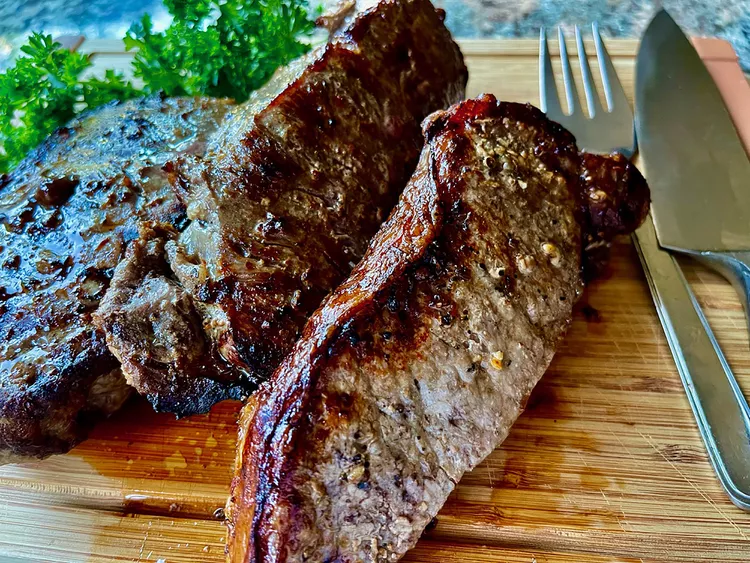

Air Fryer New York Strip Steak

These New York strip steaks were quite good, done in the air fryer, in about 10 minutes of active cooking time.
Everybody has their special touches when it comes to steak, so I’ll invite you to use the seasonings you prefer.
The method is what is important, and it truly is quite simple. It was wonderful to have steak without standing at the grill in the heat, or firing up the broiler inside!
Ingredients
- 3 New York strip steaks, about 1 1/4-inch thick
- 1/2 teaspoon your favorite seasoned salt, or to taste
- 1/2 teaspoon Montreal steak seasoning, or other seasoning of choice
- olive oil cooking spray
- 1 teaspoon Worcestershire sauce, or to taste (optional)
Steps
- About 30 minutes before cooking, remove the steaks from the refrigerator and allow them to come to room temperature. Pat steaks dry with paper towels, and sprinkle seasoning salt and Montreal Steak Seasoning on both sides.
- Preheat the air fryer to 400 degrees F (200 degrees C), according to manufacturer’s instructions.
- When the air fryer is fully preheated, spray both sides of steaks with olive oil cooking spray.
- Place steaks in the air fryer and cook about 10 minutes for medium rare, turning halfway through.
- Check the temperature of the meat before removing from the air fryer. For medium-rare, an instant-read thermometer inserted into the center should read 130 degrees F (54 degrees C). Tent with foil, about 10 minutes. Serve warm.
Return to main page